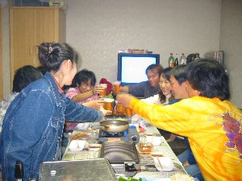
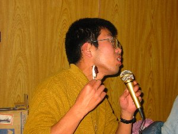

水窪蕎麦打ち体験 | ２００３年１１月１５、１６日 |
|---|---|
| 静岡の秘境とも呼ばれている（え、呼ばない？）水窪へ蕎麦打ち＆宴会をやろうと言うことで、たすまんずメンバー８名が水窪へ集結した。 到着後、私が思ったことは「案外町だな」と言うこと。（←スゲー失礼！） 私の勝手な想像では、かなり人里離れた秘境だったからだ。（←またまた失礼！） 先に水窪入りした５名と、今回案内役を務めるじゅんじゅんとで、「ちょっと行った所にある温泉」へ向かう。 このちょっとがくせ者だった。 温泉へは当然車で向かったのだが、そこは、山を越え、そしてかなりの標高差を下った谷間だった。途中の道はかなり狭く、ガードレールもない。すれ違いはかなりの熟練が必要だろう。 谷に降りた所にある集落はかなりヘビーで、隠れ里のような印象を受けた。（実はこれが当初の水窪イメージだったのだが） 狭い谷間で、田畑が多少有り、転々と古い家が建っているそんな中で、なぜか真新しく綺麗な温泉が『かぐらの湯』である。最近的な温泉の作りで、広い内風呂、露天、打たせ湯、ジェットバス等が有る。 ここの特産販売所で、今晩の宴会メニューの焼き肉用の猪と鹿の肉を購入！ こんな肉が売っているものかと驚く。 ちなみに私は、鹿も猪も食べたことが無い！（あ、猪は有ったかな？） 後発組の、のび太とゾウさんが合流し、じゅんじゅん姉宅へ。（水窪からちょっと離れ佐久間）本日は、ここの離れでお世話になる。 | |
 ビールつぎは、まーっかせて！ |  取りあえず宴会の始まりだ〜 |
| 途中で「やまみち(スーパー)」にて、食材＆飲み物を調達。生ビールはじゅんじゅんがビールサーバーを用意してくれてました。ありがと〜！ボンベなどが付いた本格的なヤツです。こんなの借りられるんだ！！ 宴会場では、ジンギスカン、焼肉など「肉攻撃」でした。もち、生ビールはサーバーサーバーから。 黒ビール（しかも贅沢にエビスの黒）でハーフ＆ハーフにしたり、チュウハイ、ワイン、日本酒など選り取りみどりで、シュガー差し入れの日本酒も美味しくいただきました。 じゅんじゅん姉夫妻＆双子の甥姪さん達も参加、カラオケでみんな盛り上がりました。肉は沢山買ったのに、あっという間に無くなって行きます。 マトンはラムより匂いがキツイと言うことでしたが、そんなことはなく美味い。鹿も猪も実に美味い。全然獣臭くなく美味かった記憶です。（←言葉変でしょう！ 実は酔いが廻っていて、美味しかった記憶は有るのだが、どういう風に美味しかったか記憶に無いんです。だから『美味しかった記憶』。） ここには何故かレーザーカラオケセットが有り、途中からカラオケ大会。よく考えれば、たすまんずでカラオケって行ったこと無いんだよね。今まで気が付かなかった面が見えました。皆、結構カラオケ好きじゃん！ | |
 なんかごちゃ混ぜ焼き肉です〜 このソーセージが旨いんです〜 |  カラオケ大会の始まり始まり〜 持っているのはマイクと厄よけ団子 |
| 特に、アル兄があんなにカラオケ好きだったとは！！日ごろのストレスが爆発した様子でした〜 とっても楽しかったです。 6時から12時くらいまでと、たすまんずにしては「早く始まって長い」宴会は、とても楽しくすぎていきました。 確かにアル兄は、自分ではあまりマイクを持っていないようだったけど、後ろの方で拳と体を揺さぶりながら、マイクより大きく歌っていました。燃えてます！って感じで。 のび太も好きモンです！良いですね〜燃えてました。団子持ちながら。 かなり沢山用意してあったはずの、肉と酒を瞬く間に食べ尽くし、お土産に持ってきてじゅんじゅん姉さんに差し上げたはずのビールまで持ち出し飲んでました。ご迷惑おかけしました〜 m(__)m | |
 ここがお世話になった所です。 真ん中辺に集落が見えますか？こんな所〜 |  蕎麦打ちその一 そば粉８＋小麦粉２を水を周りに入れながらこねます |
| 次の朝は7時半ごろ起床。 じゅんじゅん姉より「きのこの味噌汁」(これが美味しかった!!)もあり、朝からしっかりと食べ、佐久間町の伝承館に良き、しばし見学。 その後、そば打ち体験。エプロンして、手を洗い、「蕎麦うちのおばちゃん」のお話を聞き、開始。 「蕎麦粉一粒一粒に、水を回すんだよ〜」 「ぱっぱっと、手早く」 「だめだよ。ちゃんと聴いてないから失敗するんだよ」 なかなか厳しいお言葉が、、、、。 そんな中でも、10割蕎麦に挑戦していたミッチーとじゅんじゅんは、結構上手でした。2回体験できた,Ryuuさんはお徳かな？ べっしー、珍獣,Ryuu、シュガーなど、手先の器用な方々は、かなり綺麗な蕎麦が出来ていたと思います。双子ちゃんたちも、とっても美味しそうにそばを食べていました。 「結構出来てるじゃないの、家事してるの?」と（おばちゃんに）褒められ（子供には優しい）、最後にはボロボロに言われていたのびちゃんも、美味しそうな蕎麦に仕上がっていましたね。 しかし、誰よりも楽しんでいたのはぞうでした。。。 あんな体験はなかなか出来まい ↑なぜ、Ｒｙｕｕさんが２回出来てお得かというと、実はＲｙｕｕさんとアル兄はそば粉をこねるのに失敗し固まらなく、初めからやり直しをしたんです。でも、話を聞いてなかったのは私です。写真を撮るのに夢中で、聞きそびれてしまい、Ｒｙｕｕさんに聞いてたんですから。もしかして、それでじゃましちゃったかな〜 しかし、自分で打った蕎麦を食べるってのは、なかなかのモノです。これならそば粉さえ有れば自分で出来そうだな〜 あ、残った蕎麦を持ち帰り（なんせ、２人前作ったから）、次の日に食べたらぼろぼろのなってしまいました。不純物が入っていない蕎麦は、やはり日持ちがしないって事ですね。 | |
 蕎麦打ちその二 こねたモノを伸ばします |  蕎麦打ちその三 伸ばしたモノを折り畳んで切ります。包丁を落とすように。 |
| 蕎麦を食べ、道の駅で買い物をして、布滝温泉に移動。 ここは岩風呂から滝が見える、とっても贅沢なお風呂。ぬるぬるしたお湯はいつまでも温かく、疲れが取れます。運がよければ、猿にも会えるとか。 紅葉が終わってちょっと残念でしたが、景色は良いし、久しぶりの山で日ごろのストレスが一気にふっとび、とてもよかった！！夏に川遊びも良さそうでしたよ。 2日間、じゅんじゅんには本当のお世話になりました。ありがとう〜蕎麦打ちには、ぜひまたきたいと思いました。 今度は新緑か、紅葉がいいなあ、夏も涼しそうで良いですよ。 本当にのんびりしてアットホームでいい感じでした。時間を気にせず過ごせたって感じです。まじめに時計を見た回数は少ないですよ。蕎麦打ちの時ぐらい？田舎の（と、言っても榛原なので水窪より・・・・）ばあちゃんの家を思い出します。 水窪も浜松市辺りと合併するそうで、『町』としては、後わずか！静岡市から車で３時間。人口約３６００名（ちなみに静岡市は７０万）、人口密度１３人／K㎡（ちなみに静岡市は、井川とか南アルプス等の山林を入れて５１２人／k㎡）、是非一度お越し下さい。JR飯田線でも行けますよ。 あ、夏は涼しくないでしょう。（じゅんじゅんに聞いてないけど）。後輩が夏に行ったとき、マジで我慢できないくらい暑かった！と、言ってました。天竜、佐久間辺りは毎年、夏の『本日の最高気温』で、上位を占めてますからね。静岡市より暑い。 でも、行って損は無いでしょう！ | |
 蕎麦打ちその四 切ったモノを茹でます。ばらける様に。かき混ぜないで。 |  布滝の温泉です。 おや、誰か入ってますね？ |
| 写真：べっしー／ゾウ コメント：べっしー（黒）／ゾウ（オレンジ） 編集：べっしー | |